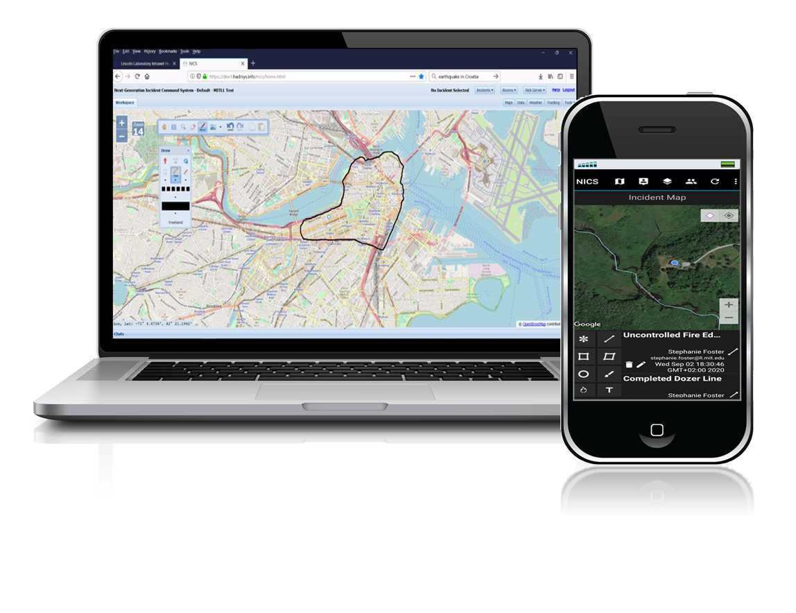

The NICS Montenegro Field Exercise 2019 took place in Montenegro from 1 to 4 October 2019. The exercise aimed to enhance the cooperation, planning and deployment of international emergency response teams by utilising the Next-Generation Incident Command System (NICS)..
With NATO’s help, North Macedonia is implementing the Next-Generation Incident Command System to enhance their real time situational awareness and better deal with disasters such as landslides and floods.
The field exercise in Bosnia and Herzegovina offered the perfect setting to try out a number of life-saving technologies that have been developed in the framework of the SPS Programme. 34 NATO member and partner nations participated in the exercise, organised by NATO’s Euro-Atlantic Disaster Response Coordination Centre (EADRCC).
Learn MoreNICS is a web-based command & control environment for small to large to extreme scale incidents that facilitates collaboration across local, regional, national and international levels of preparedness, planning, response, and recovery for all-risk /all-hazard events. NICS facilitates situational awareness for widely dispersed responders.
NICS provides collaboration and communication capabilities across all echelons of responders; it enhances the quality and accessibility of sensor data; and it integrates location data for resources, vehicles, and personnel. During an incident, NICS provides an information backbone that manages and distributes data, including real-time vehicle location feeds, weather, critical infrastructure, and terrain information.
Incident data is displayed by using a web-based, open standards platform that allows users with the proper permissions to log into a map-based environment accessible via an ordinary web browser and Internet connection. NICS offers graphical tools, including geo-referenced virtual whiteboards, for dynamic interagency collaboration that facilitates a coordinated response.
Using these tools, responders are able to quickly form teams, send messages to one another, and remotely share maps and drawings that enhance the management of the incident.
NICS supports the following features:
Dynamically tailor the common operating picture in real-time, only focusing on the data and information that is necessary for the task at hand.
• Create Multiple Rooms.
• Toggle data layers on & off.
• Mark the map with drawings, symbols, & markers.
• Share data across all echelons of the response.
Quickly determine the scale of an incident, and start planning your response with easy to use tools.
• Area Measurement tools, help determine the size of an incident.
• Point to point distance Measurement tools, can help in route planning.
• Use the “Search Cone” tool to help plan Search & Rescue missions.
Have the ability to go back and look at how an Incident unfolded, provide insight on ways to improve processes, and have a historical record of how the incident was handled.
• View key events in the time stamped timeline view.
• Store your organizations reports for all to review or secure them in a locked room.
• Look back on all messeage communication in the General Messenger.